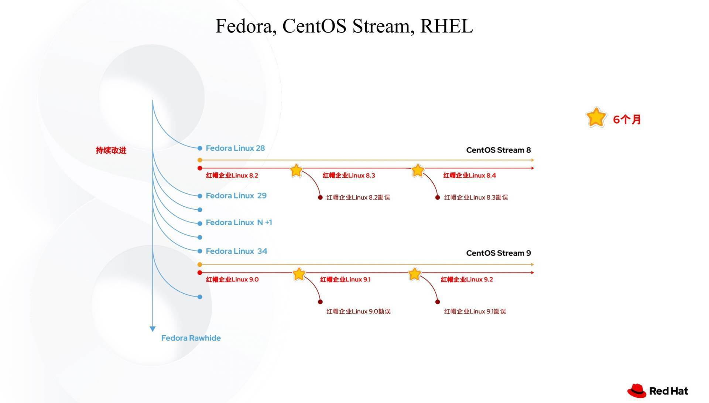

CentOS
什么是CentOS
CentOS是免费的、开源的、可以重新分发的开源操作系统，CentOS（Community Enterprise Operating System，中文意思是社区企业操作系统）是Linux发行版之一。
CentOS Linux发行版是一个稳定的，可预测的，可管理的和可复现的平台，源于Red Hat Enterprise Linux（RHEL）依照开放源码（大部分是GPL开源协议）规定释出的源码所编译而成。
自2004年3月以来，CentOS Linux一直是社区驱动的开源项目，旨在与RHEL在功能上兼容。
系统版本分类
CentOS主要分为两个主要版本，CentOS Linux和CentOS Stream版。
- Linux版每两年发行一次，每个版本的系统会提供10年的安全维护支持。
- Stream版为滚动更新版，意味着没有固定版本号，是动态更新具体的内容。
产品生命周期区别
CentOS Project 已经将重点从CentOS Linux转移到CentOS Stream。以下是CentOS各个版本的预期生命周期终止日期（EOL）
- CentOS Linux 7 EOL : 2024-06-30
- CentOS Linux 8 EOL : 2021-12-31
- CentOS Stream 8 EOL : 2024-05-31
- CentOS Stream 9 EOL : 预计2027年，取决与RHEL 9 的EOL
版本生态位置（上游与下游）
CentOS Linux版为传统CentOS系统，系统的基本源代码由RHEL对应版本的开源代码提供，是RHEL的下游
当RHEL更新后CentOS Linux根据RHEL更新的内容进行更新并修复其中可能的漏洞等。版本略落后于RHEL，更新新特性速度较RHEL慢。提供与CentOS Linux版以前一样的安全服务支持和稳定的服务器操作系统，但CentOS Linux 8服务支持时间被大幅减少，CentOS Linux7的维护时间暂时没有改变，且官方维护团队的重心已经转移到Stream版本。
CentOS Linux在红帽系的系统中的生态位置 Fedora Linux ➡️ RHEL ➡️CentOS Linux（或者同级）
CentOS Stream版则为滚动更新版，系统的基本源代码也由RHEL对应版本的开源代码提供。但代码更加激进，是合并进RHEL前的一个试验场，比RHEL更新新特性更快。等到相关新代码成熟后由RHEL合并，是RHEL的上游
CentOS Stream在红帽系的系统中的生态位置 Fedora Linux ➡️ CentOS Stream ➡️ RHEL
